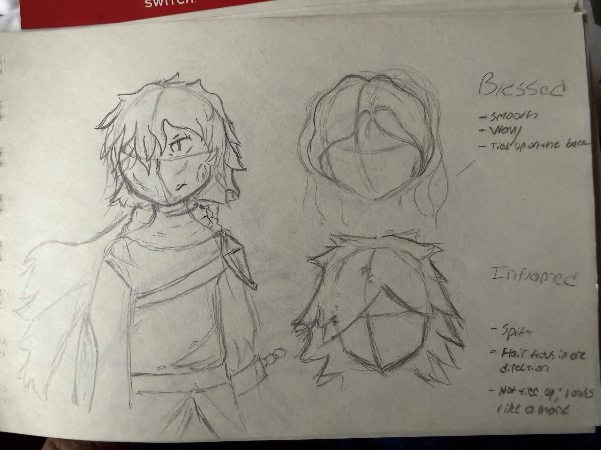
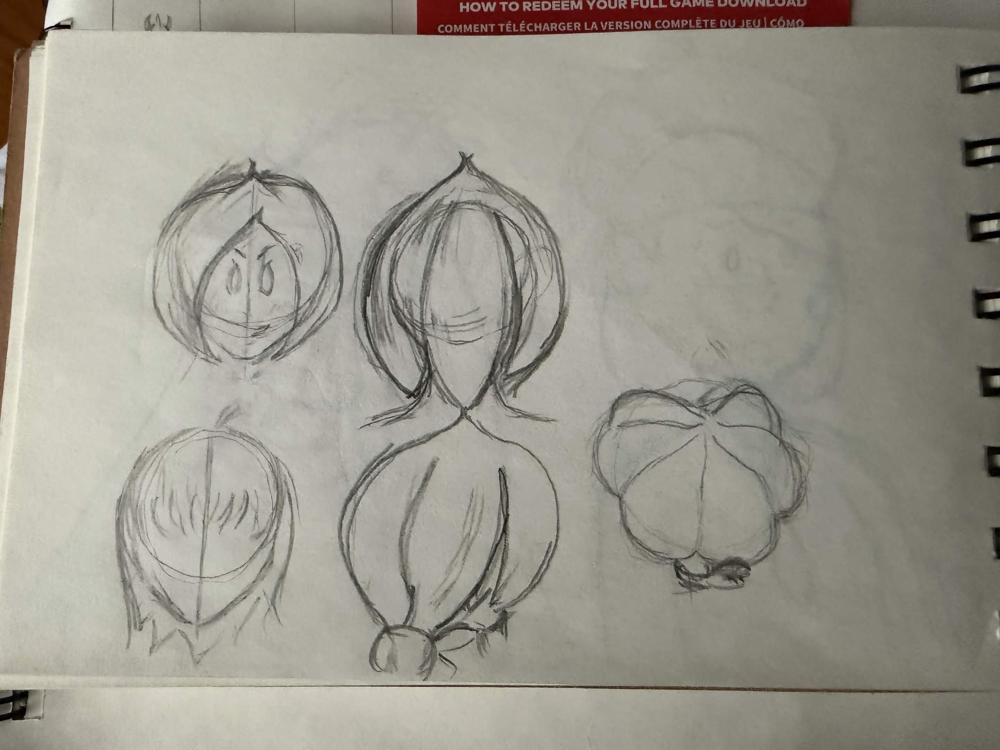
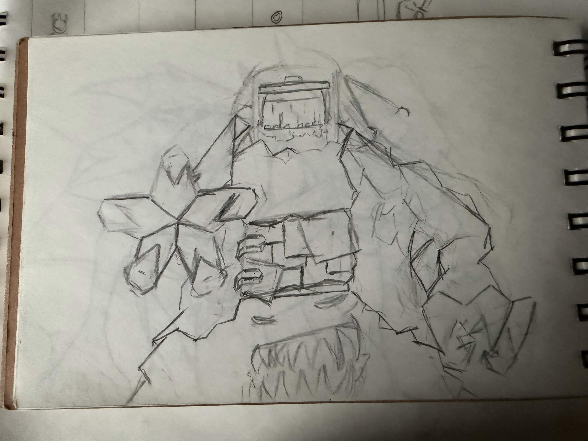
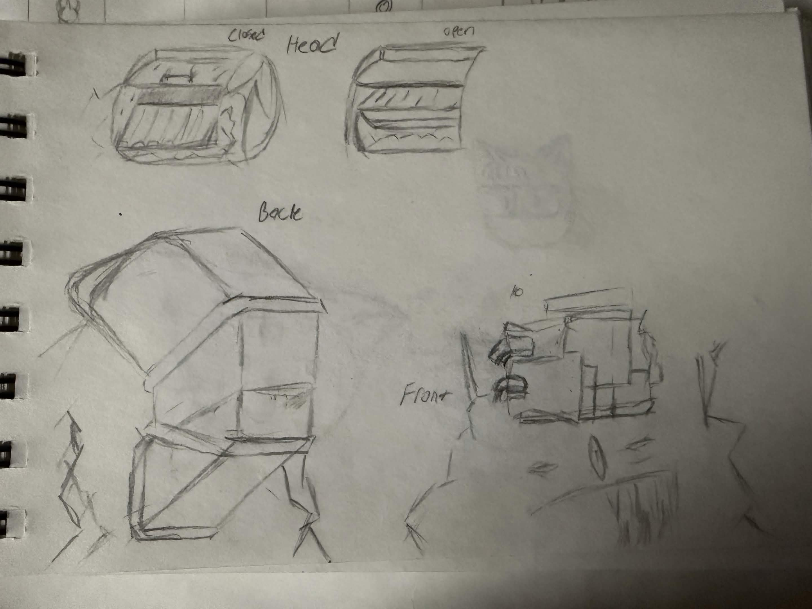
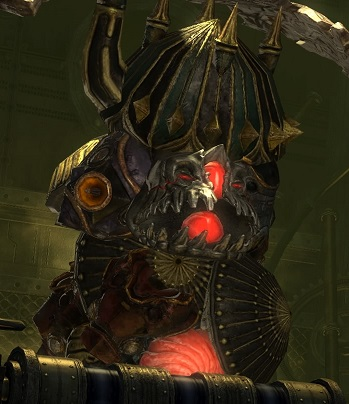
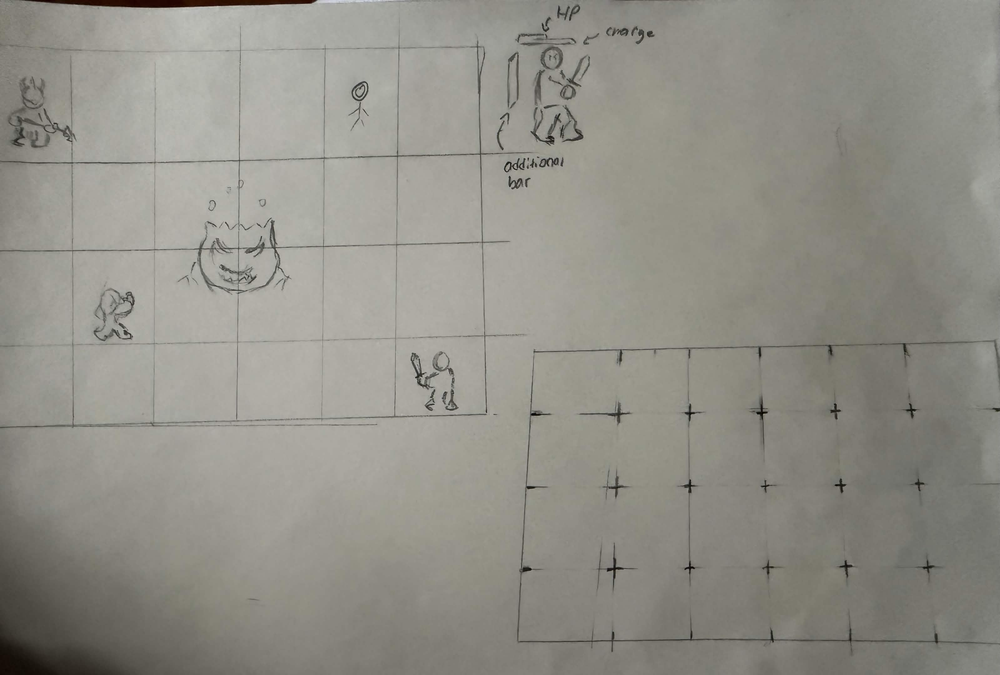

Grandblog #1: Early Design Sketches for Project Branching Paths!
Some sketches done before PBP went into production!
Return to Blog portal
Some sketches done before PBP went into production!
Return to Blog portal
Hello once again!
Josh back once again with another Grandblog post. This time however, I’ll be sharing some fun early sketches for some of our projects thus far! I’ve already stated this in the previous blog entry, but I’m not artist—not to the extent as our main artist Shelly is. I’m only started drawing again a couple years back as a means to help give a clearer vision to my ideas. I was told on multiple occasions that I am—unfortunately—really bad at explaining things, especially when what I’m trying to explain is something more complex. It was for this very reason that I started to draw again and while it is fun, it can feel a bit embarrassing to look back on some of it. I don’t want to think that I’m bad at it and just swallow the fact that I am just a beginner and that improvement comes with time, but I still can’t help but just be embarrassed! Still though, I think it would be fun to share the early inceptions of ideas. There’s a lot of early sketches that I’d like to share, so without further ado, let’s get into it!
Hoo boy, am I excited to share these! To give some context to how long I’ve been holding on to these for—Project Branching Paths was never intended to be a game while working on its concept… back in 2015. It was initially supposed to be an online comic series. The art would’ve been amateurish and crude for sure, but listen—if there are artists out there that start their online comic series with sub-par art and continue to improve as the comic continued, then I could’ve too!
Project Branching Paths would change from a comic to a personal game project during 2018, however. After playing and completing the fan-made translation of an old-school RPG called LIVE-A-LIVE, which was first released on the Super Famicom in Japan on September 2nd, 1994, I knew that I wanted to make something meaningful like it. I absolutely adored the story and loved how different the gameplay was, and wanted to make something inspired by all of it while taking from other sources of inspiration. I settled on taking inspiration from Final Fantasy XIV seeing as it was a game that I spent a lot of my spare time on playing during those times.
To start with the sharing, here’s an early design of Bitz:

Bitz's story is almost kept intact to how it was during the early concepting of the story, but instead of him feeling regret towards not being able to save his friends and being locked away from society by the Demon King, he was actually supposed to have regret for being touted as the hero—upset at the fact that this is the role he was given, but not one that he chose. I wasn't too happy with that direction early on, so it changed rather quickly. I wanted him to look upset, depressed, damaged, dishevled and broken—like he's seen enough during his lifetime and wanted nothing more than to be over with everything. A lot of his design takes inspiration from "edgier" characters, like Cloud Strife from Final Fantasy 7 or Link's Twilight Princess design.
His sister, Amaryll, was always intended to be the exact opposite of his character—adventerous, couragous and always ready to take on
a fight. Her name comes from Amaryllidaceae, which is the family where garlic belong to! Why garlic? Because that is
also the same family onions belong to! Why onions? Amaryll's character is inspired directly by the Onion Knight from Final Fantasy 3, which is a role that got strong depending on
how many roles you have maxed out on a character. She was always designed to be a really strong unit during the late game—kinda like
a return in investment if you could make it far enough. Why Onion Knight?
...Why do you ask so many questions?!
Here's an early design sketch of Amaryll's hair:

Pretty crude and amateurish stuff, but something I can't help but smile looking back on it.
Characters weren't the only things that I used to sketch back during the early inception of the project, but bosses and other
UI stuff, too! For instance, the Incinerator—the boss that everyone absolutely hates LOVES—
had some early designs too. Fair warning though, it's pretty nonsensical:


Incinerator was always made to be a bit of a pain-in-the-ass boss. Wouldn't be a proper game without one! He was largely inspired by
Refurbisher 0, who is from the Alexander raids in Final Fantasy XIV. Why that boss?
...I don't really know!

I was always fond of this boss for some reason. It's commonly refered to as the worst one in the raids, but I tend to disagree. I was always a fan of how different and make-or-break the mechanics are during this boss. It feels very different from a lot of raid bosses in the game, and I really apprecaite it for that reason. It also has Metal from the Final Fantasy XIV Soundtrack playing during the boss fight, which is just an added bonus to the boss. All in all, I'm glad that people view Incinerator as a tough boss, because that's the same way people view Refurbisher 0! I'd say thats a job well done!
And to finish the sharing, I want to show an early design of the playing board used in Project Branching Paths. It's nothing too special—in fact, I feel it is something traditional. It's close to LIVE-A-LIVE than it is to any other strategy game like Fire Emblem or Mewgenic, but I feel it would still be fun to share!
Here's the early concept idea of the board/grid the characters play on:

Fond memories looking back at this one! This sketch was meant to help me (and then eventually the team) visualize what the game would look like. I think my favorite part of this whole sketch is the stickman at the top-right of the grid. You could tell that was slowly getting more and more tired while sketching this, haha. The other grid is at an angle, kinda like in the LIVE-A-LIVE Remake. We figured going with this would be better as it would give all things on the field more depth instead of feeling static and flat. The bars are drawn on here too, describing the HP, Charge and the additional (later names to Move) bars.
I sure did share a lot today! It was a lot of fun, too! I've held on to these sketches for years and it was surreal using them
as reference points during the early developement of the game. But now that we have a fully competent and insanely talented artist
on board, we've little reason to use these! Well, besides for an eventual artbook release for Project Branching Paths, but that'll
be VERY far into the future. As always, thank you for taking the time to read this post! I really try to put my all into these, this
one especially taking a lot out of me with taking a stroll down memory lane. This isn't the end of the sharing however, as I DO have plenty
more sketches for our other projects that I could share too!
But that will be all for another time.
Stay safe, and until then!
- Josh
Return to Blog portal